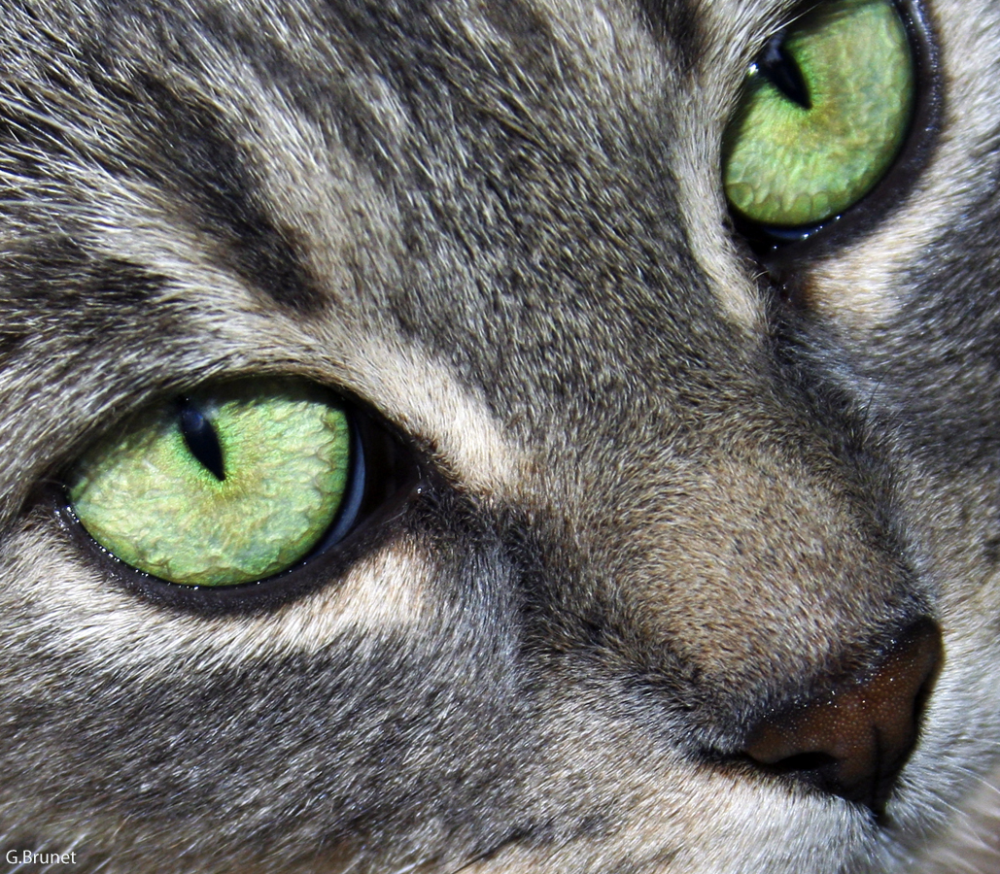

>Le chat est un animal très répandu dans les foyers français. Sa popularité vient en partie de son indépendance, appréciée par de nombreux propriétaires.
Chaque race possède des besoins spécifiques, notamment en matière d'entretien du pelage.
| Race | Taille | Caractère |
|---|---|---|
| Européen | Moyenne | Sociable et joueur, s'adapte facilement à la vie de famille. |
| Maine Coon | Grande | Calme et affectueux. |
| Siamois | Moyenne | Vif et communicatif, réclame beaucoup d'attention. |
| Persan | Moyenne | Placide. |